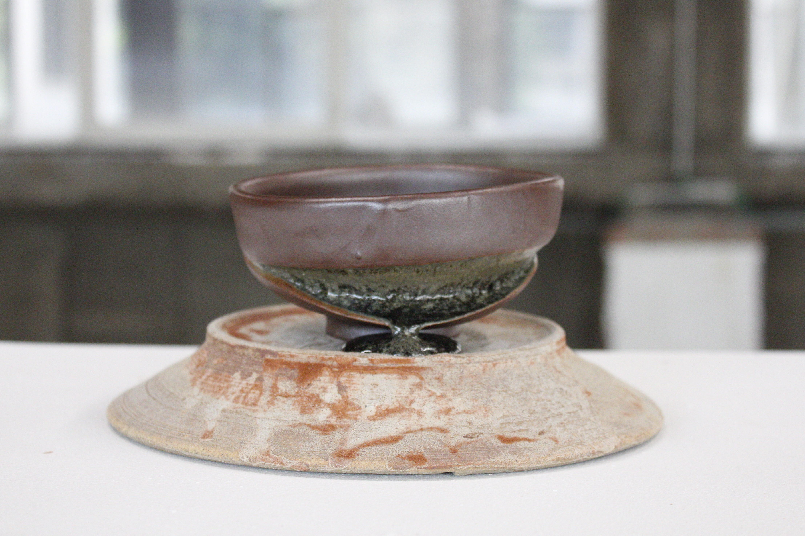
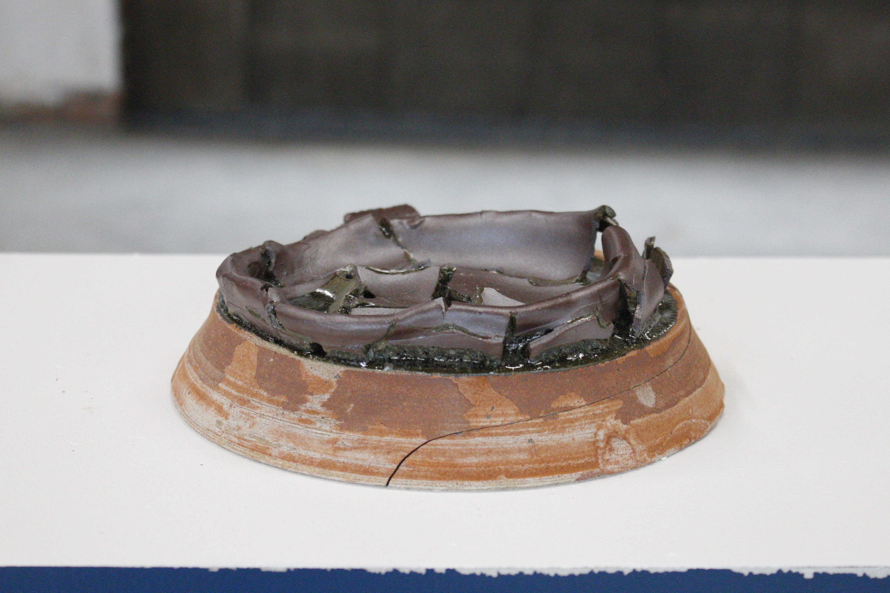
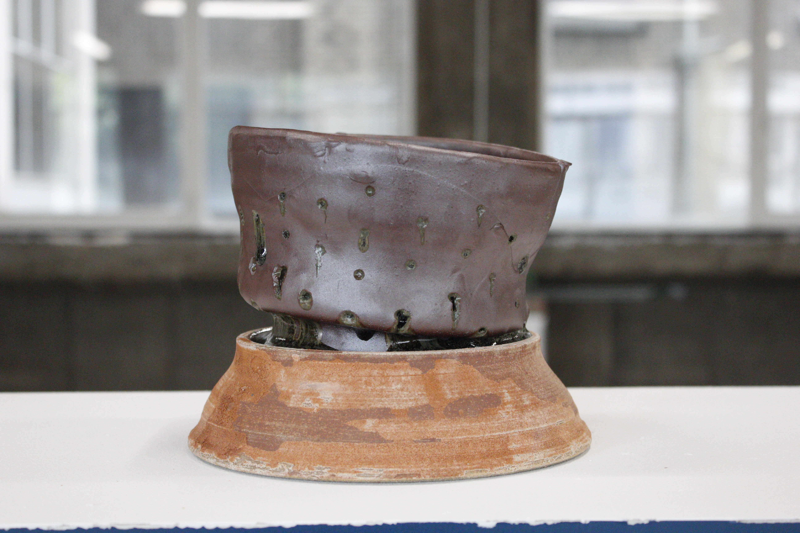
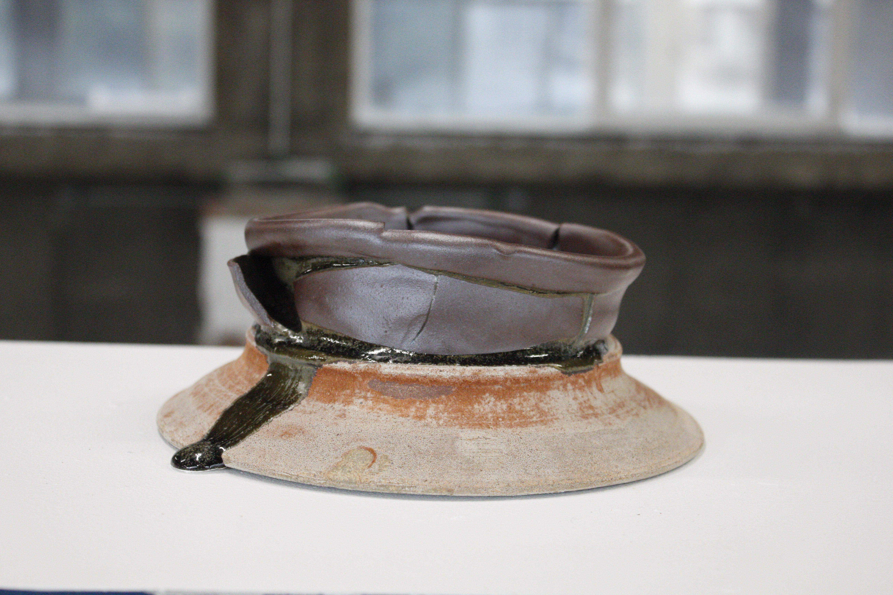
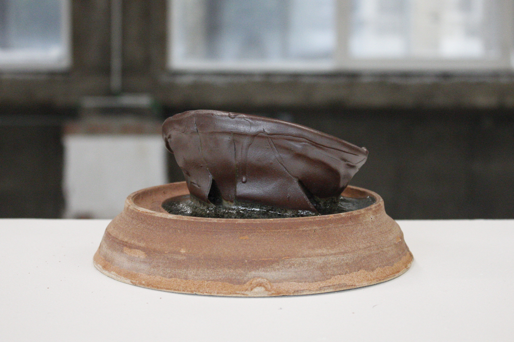

Recto V 01 - 2022 – marl and stoneware - 15x26x24

Recto V 04 - 2022 – marl and stoneware - 10x26x22

Recto V 06 - 2022 – marl and stoneware - 22x25x24

Recto V 02 - 2022 – marl and stoneware - 13x26x22

Recto V 09 - 2022 – marl and stoneware – 14x25x23